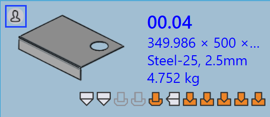

Werkzeugvalidierung
Dieser Abschnitt beschreibt, wie Sie auf die Werkzeuginformationen für Teile in TruSmartCAM zugreifen und diese ändern können.
-
Klicken Sie mit der rechten Maustaste auf eine beliebige Teilekachel, um das Teilepanel zu öffnen und auf Werkzeugoptionen zuzugreifen.

-
Klicken Sie auf Werkzeuge, um zur ersten verfügbaren bestückten Instanz zu wechseln.
-
Alternativ klicken Sie direkt auf eine bestückte Instanz, um Maschinendetails und Werkzeugoptionen anzuzeigen.
-
Verwenden Sie
 für Zur Anzeige im Lesemodus öffnen.
für Zur Anzeige im Lesemodus öffnen. -
Verwenden Sie
 für Dokument zur Bearbeitung auschecken.
für Dokument zur Bearbeitung auschecken. -
Die ausgewählte bestückte Instanz wird in TecZone oder MetaCAM geöffnet.
-
Führen Sie manuelle Werkzeugprüfungen durch und nehmen Sie erforderliche Änderungen vor.
-
Wenn Sie versuchen zu speichern, werden Sie in einem Dialog Unsaved Changes aufgefordert, Ihre Bearbeitungen zu bestätigen.

-
Klicken Sie auf Yes, um mit dem Speichern fortzufahren.
-
Das System führt nach dem Speichern erneut eine Werkzeugvalidierung durch.
-
Wenn keine Fehler vorliegen, erscheint die Option, Änderungen in TruSmartCAM zu speichern.

-
Wenn Werkzeugfehler gefunden werden, wird eine Fehlermeldung angezeigt:

-
Nach dem Speichern wird der Werkzeugstatus des Teils in der Teilebibliothek aktualisiert.
-
Eine grüne Farbe auf der bestückten Instanz zeigt an, dass sie eingecheckt ist.

-
Der Autor der bestückten Instanz wird auf die letzte Person aktualisiert, die sie bearbeitet hat.
-
Das Feld Vom Benutzer bearbeitet gibt an, ob die bestückte Instanz manuell geändert wurde. Wenn ein Benutzer die Instanz auscheckt und Änderungen vornimmt, wird dieses Feld beim Speichern automatisch auf Ja gesetzt.

-
Wenn ein Teil gerade bearbeitet wird, erscheint ein Benutzersymbol auf seiner Kachel.

-
Beim Bewegen der Maus über die Kachel wird angezeigt, wer sie ausgecheckt hat und zu welcher Zeit sie ausgecheckt wurde.
-
Während das Teil ausgecheckt ist, ist die Option
Dokument zur Bearbeitung auschecken für dieselbe bestückte Instanz deaktiviert, und die Option  Checkout abbrechen wird aktiviert.
Checkout abbrechen wird aktiviert.